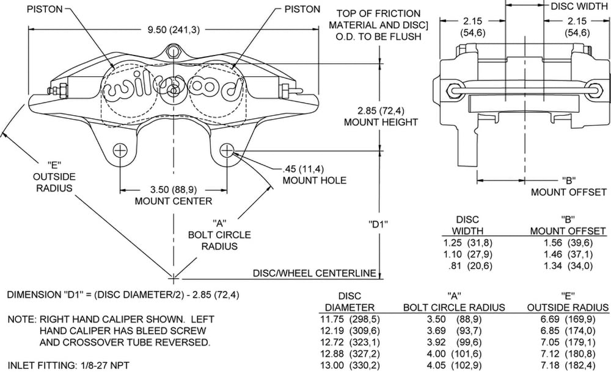

-
Anyone have any experience with these. I am currently debating putting these on instead of the Z32 calipers. Would anyone here have any experiences with them or know if they would be an upgrade or should i just stay with my Z32 calipers… I am preferably looking for people that have ran both sets hard and can give me some insight as to your experiences. If i go with either, they would still use the 12.75" brembo 350z rotor.
This is a diagram. The specs from the wilwood site are as follows. Thanks for any input you might have.
Bore size
1.38" 35,0 mm

1988 570zx SS Edition
Originally posted by Neil86t -
0 -
0 -
Did i ask for a write up… No, i did not.zmech wrote: Or maybe like this? First 30 seconds of this video.
http://www.streetfire.net/video/a-look- … 119439.htm
Or if you are really good, you will locate my Wilwood write-up I did some time back.
Maybe i should rephrase. I am not/do not, need a write up. I am not looking for instructions on how to do it, pictures of your setup, video's of your setup (unless its on the track under harsh conditions.)I am looking for peoples experiences with each, preferably someone who has used both. I am trying to decide if it is worth it for me to switch to the wilwood ones.
1988 570zx SS Edition
Originally posted by Neil86t -
[quote]bleakdragonmage wrote:Im sure in his write up you will find out that he might have liked them more then the z32 brakes or he would have them on his car right? he helps you and you flame him? thats kinda lame man..Originally posted by zmech -
He didn't try and help me. He was trying to be a condescending asshat. If he was trying to help he would have said "oh, i liked them more than my z32/less than my z32 setup. Here is my writeup. If you want to discuss it further PM me or blahblahblah"Chrisw_2003 wrote:
Im sure in his write up you will find out that he might have liked them more then the z32 brakes or he would have them on his car right? he helps you and you flame him? thats kinda lame man..
No, he posted an irrelevant video. He also referenced a writeup that, as far as searching inside the thread that mentions it, is a broken link. Or, the other thread where he doesn't directly compare the two, but on unequal playing surfaces. As he used the normal sized rotor for the Z32, but the 13" one for the Wilwoods. As stated before, both would be using the 13" rotor, so i am looking for a direct comparison of the calipers, not the rotors.
Although, i do admit, i might have taken something out of context…and if i did, i apologize. Its late and im cranky. I am going to ask this on hybridz.org as there are probably more members familiar with the superlites than here.
1988 570zx SS Edition
Originally posted by Neil86t -
So the only people you want speaking in this thread are people who have gone out and done a road test with direct comparisons using controls between Z32 (which one, or all) calipers vs the exact wilwood caliper that you are asking about? Or are you looking for people who have used both and are subject to the placebo effect given how much they spent on the wilwoods and will say "yea they felt much better " ? If you are going to flame someone who posts with information regarding the setup you are asking about on the same platform that you are most likely put it on, even if it isn't exactly what you were looking for in the first place, then you need to be more specific with exactly what you are looking for and tell people not to post with any other information.
/tardrant1985 NA2T(now RB) * 1988 SS x2 * 1984 AE x3 * 2006 350Z

-
I will just have a mod delete this. I should've known how this would go here. I will go ask on Hybridz. Sorry for wasting space.
Thanks.
edit: after searching on hybridz again, i found one member who has used both. I need to pm him, but he said that he prefers the wilwoods over z32 saying they're better.. I still need to ask the specifics.
1988 570zx SS Edition
Originally posted by Neil86t -
Well, I dont see how Willwoods themselves are better but I would think the difference in components would have more to do with the performance aspect your asking about. For instance, I see alot of different ROTOR thicknesses available, piston sizes, and number of pistons. I think you should've still asked zmech the specs on his compared to the z32 calipers and rotor setup. In reality I dont think you can compare them directly because if you had a six pot willwood and a 1.5" thick rotor, I don't think it would be fair to compare it to the z32 setup. Perhaps broaden your horizons and ask the 240sx crowd who often run the z32 caliper setup as well, and with their numbers someone has to have upgraded to willwoods."Its the s12's sexy over weight step daughter, the z31" -
even if you run Wilwood 4 pot calipers, you'll need to either make sure you properly spec what piston sizes to use to maintain correct brake bias or you'll need to run an adjustable proportioning valve.
the only two advantages you'd get probably from running Wilwoods is increased pedal feel/modulation due to the stiffer caliper and I don't know it for a fact but possibly increased pad size.
-
To add, you do not have to grind away on the wilwoods, and they are possibly lighter.Andrevas wrote: the only advantages you'd get probably from running Wilwoods is increased pedal feel/modulation due to the stiffer caliper and I don't know it for a fact but possibly increased pad size. Shiro Special # 981 Being assembled in my spare time Chromoly acquired!
Shiro Special # 981 Being assembled in my spare time Chromoly acquired!
Originally posted by BoostedMamma -
From what I've heard they are as light as the name says but keep in mind a caliper is a caliper, it is not rotating mass so it removes nothing more than say ripping out your carpet. I'd worry more about rotors which are power sapping rotational mass. Not to mention early Z32TT calipers are made of aluminum so they are very light from the factory, though from what I've heard Nissan switched to iron because or durability reasons. -
Wilwood will add way more inches to your dick than z32 calipers..... if that makes a difference in stopping power 86na - BlueZ
86na - BlueZ
Shiro #366 - Kouki Monster
85t - Mr Tickles -
Big dicks add up to extra weight, that's why Asian drivers are so fast and nobody hears fast car and thinks "driven by a black guy"
No offense to either party.... -
You are so wrong its unbelievable. Think sprung vs unsprung weight.TurboDreams wrote: a caliper is a caliper, it is not rotating mass so it removes nothing more than say ripping out your carpet..The bullshit stops, when the GREEN light drops.
Only babies cry about the bottle.

Copyright © 2006–. All rights reserved. Privacy Policy